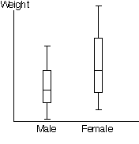
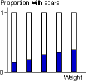

Comparing the response distributions at different x-values
If a response, Y, is numerical and explanatory variable, X, is categorical, box plots can be used to compare the response distribution at the different x-values.

If the response, Y, is categorical and the explanatory variable, X, is numerical, we are again interested in comparing the response distribution at different x-values. We might use X to define 'groups' by splitting its values into classes (as might be done to draw a histogram) and this allows us to use stacked bar charts to describe the relationship.

It is not necessary for the 'classes' to be of equal width. For example, some of the age groups below are of width 3 months, whereas others are 6 months and the extreme classes are wider still.